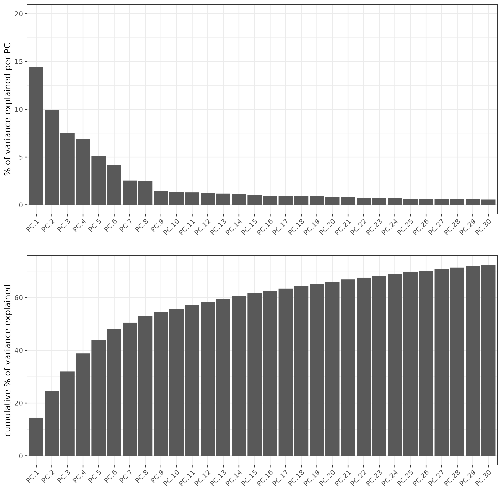
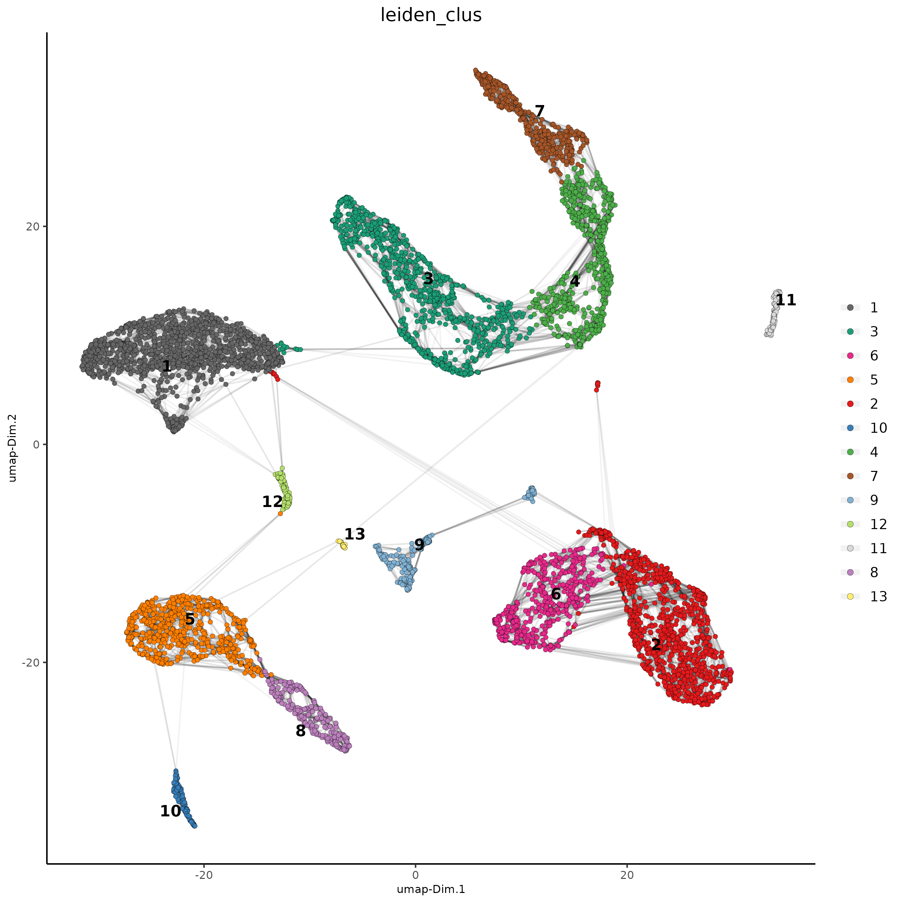
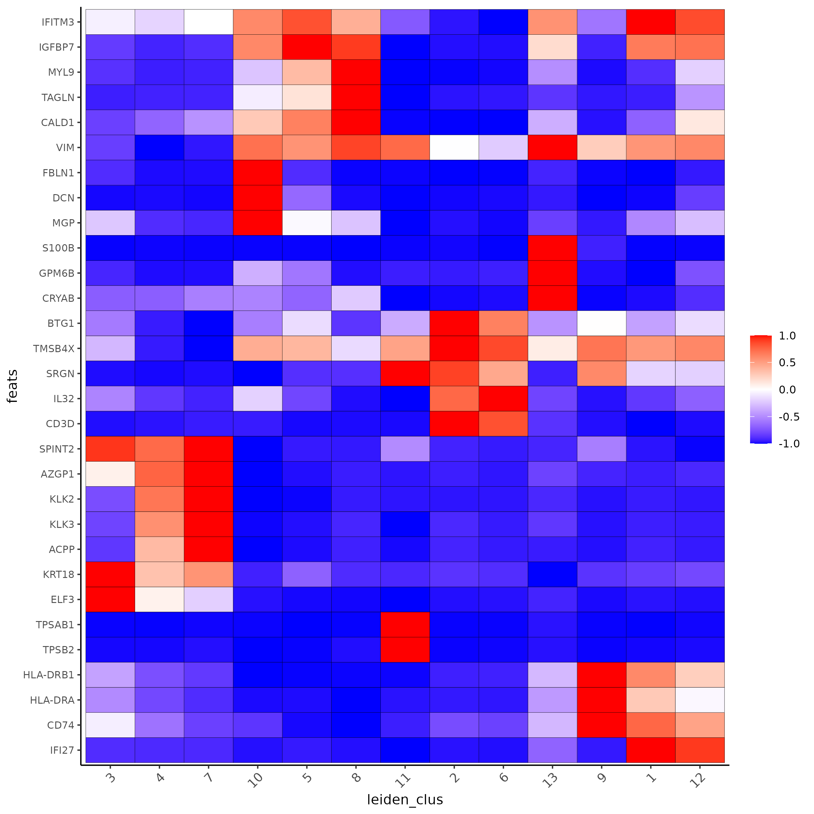
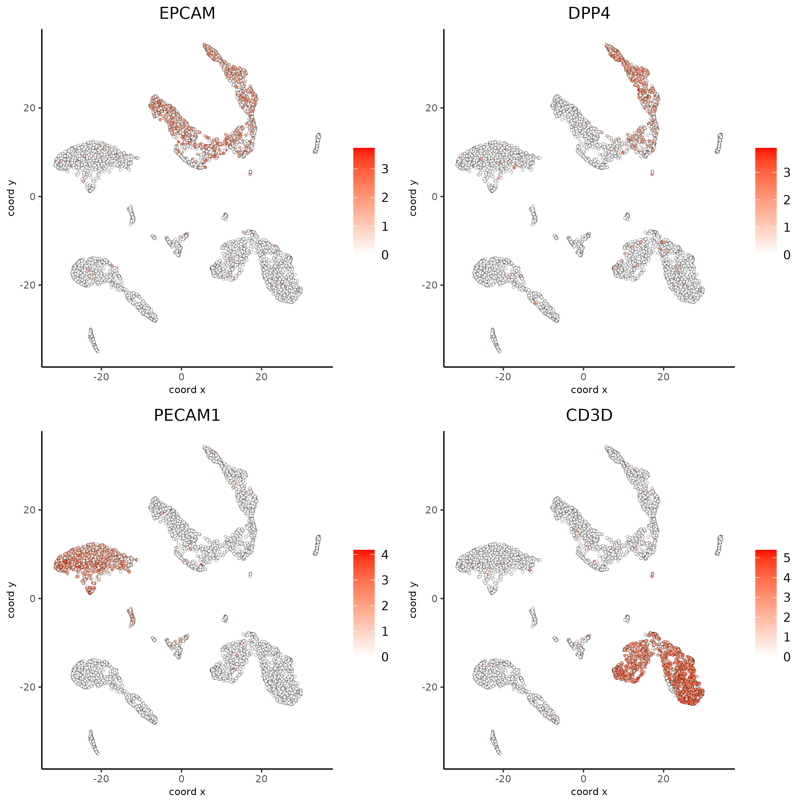
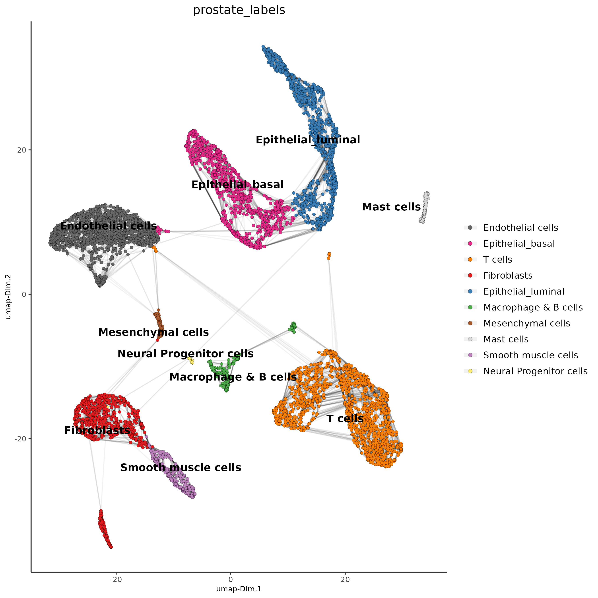
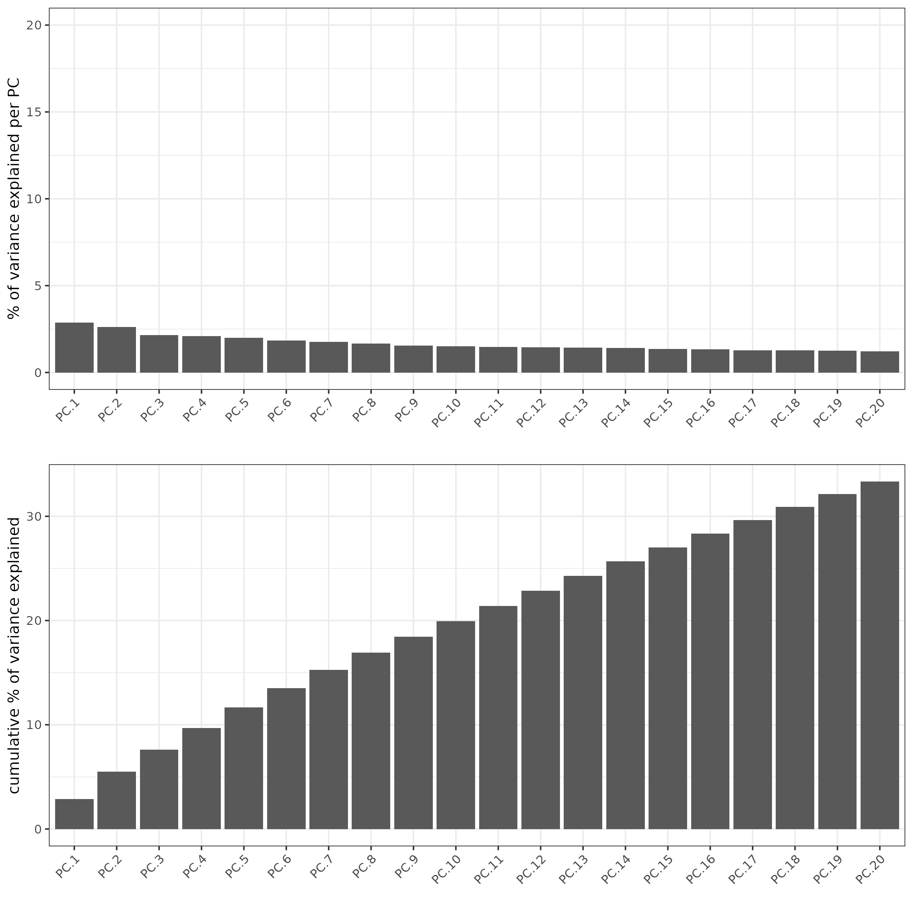
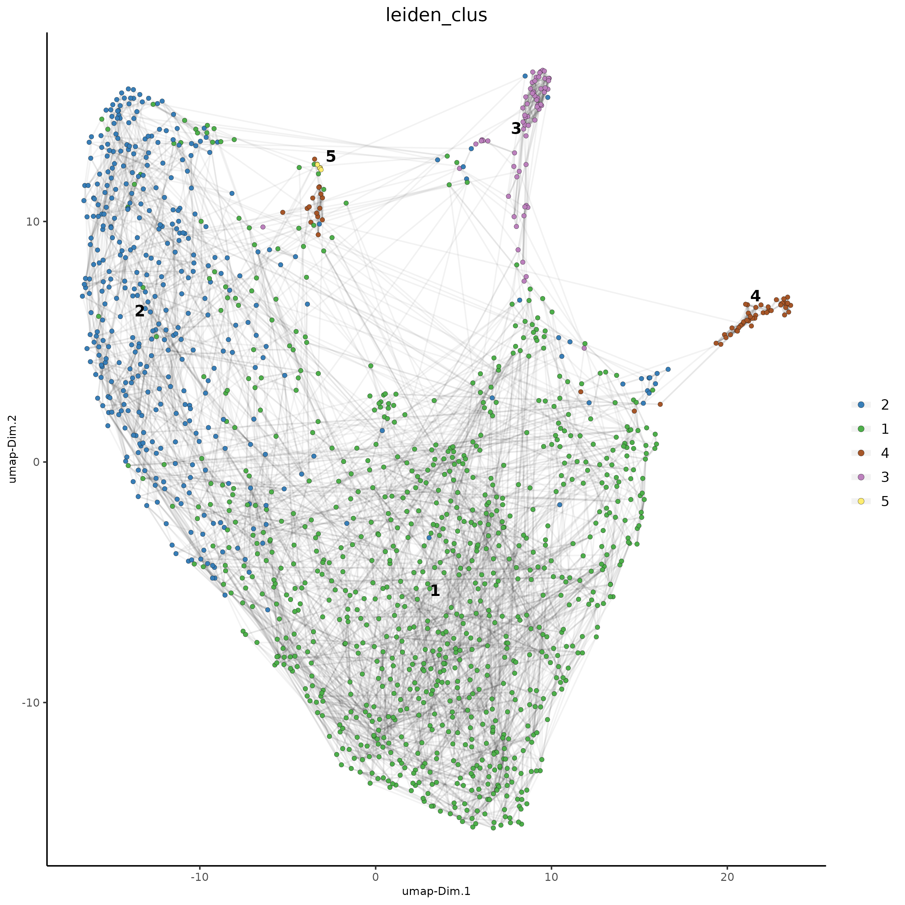
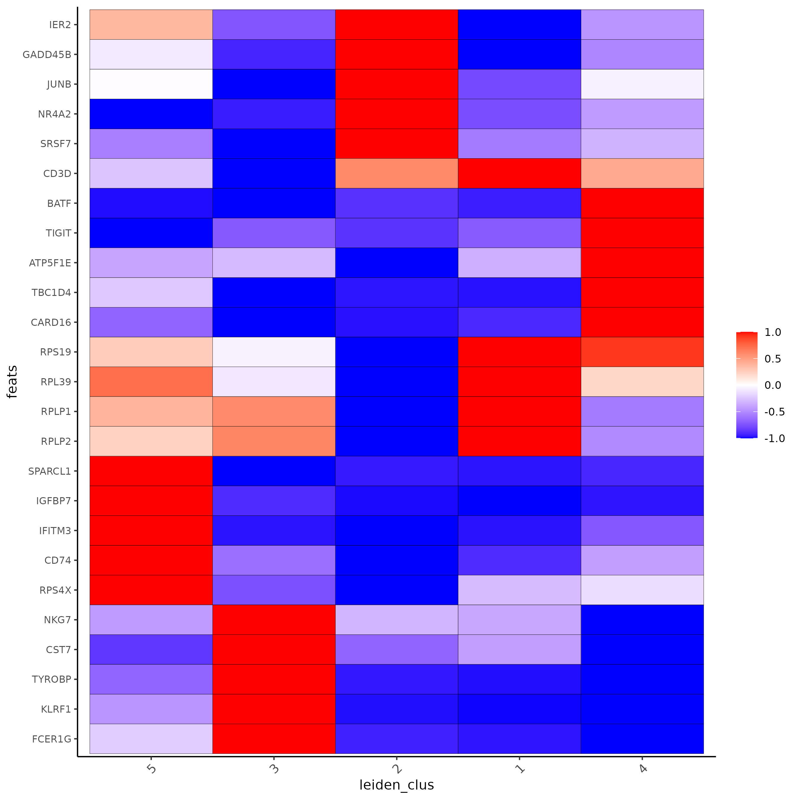
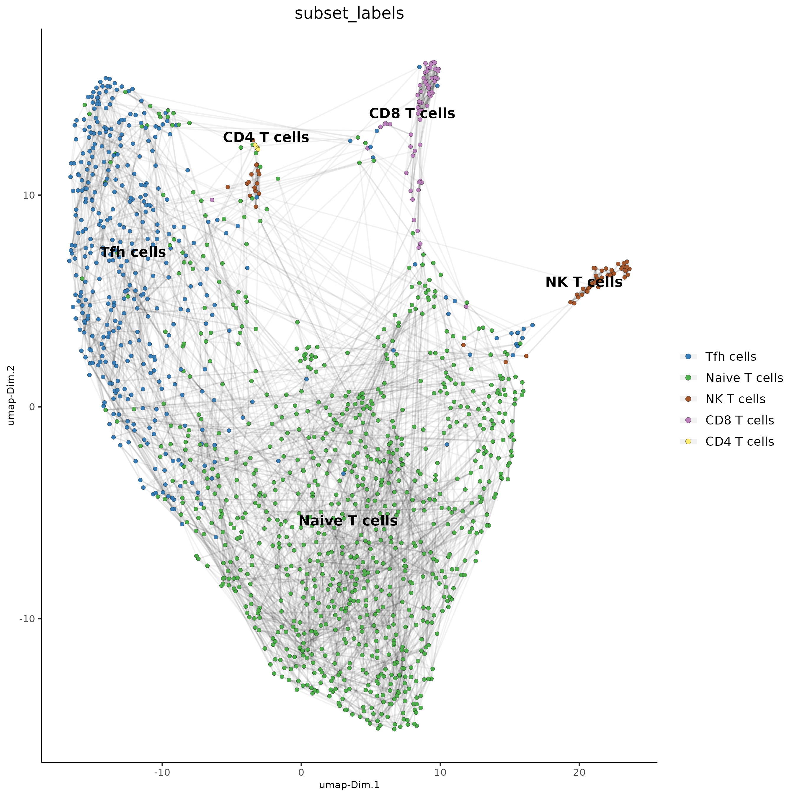

10X Single Cell RNA Sequencing
Source:vignettes/singlecell_prostate_standard.Rmd
singlecell_prostate_standard.Rmd
# Ensure Giotto Suite is installed.
if(!"Giotto" %in% installed.packages()) {
devtools::install_github("drieslab/Giotto@suite")
}
# Ensure GiottoData, a small, helper module for tutorials, is installed.
if(!"GiottoData" %in% installed.packages()) {
devtools::install_github("drieslab/GiottoData")
}
library(Giotto)
# Ensure the Python environment for Giotto has been installed.
genv_exists = checkGiottoEnvironment()
if(!genv_exists){
# The following command need only be run once to install the Giotto environment.
installGiottoEnvironment()
}Set up Giotto Environment
library(Giotto)
library(GiottoData)
# 1. set working directory
results_folder = 'path/to/result'
# Optional: Specify a path to a Python executable within a conda or miniconda
# environment. If set to NULL (default), the Python executable within the previously
# installed Giotto environment will be used.
my_python_path = NULL # alternatively, "/local/python/path/python" if desired.
# 3. create giotto instructions
instrs = createGiottoInstructions(save_dir = results_folder,
save_plot = TRUE,
show_plot = FALSE,
python_path = my_python_path)Dataset Explanation
Ma et al. Processed 10X Single Cell RNAseq from two prostate cancer patients. The raw dataset can be found here
Part 1: Create Giotto object from 10X dataset
Note that you will need an input directory for barcodes.tsv(.gz) features.tsv(.gz) matrix.mtx(.gz)
giotto_SC <- createGiottoObject(expression = get10Xmatrix("/path/to/filtered_feature_bc_matrix",
gene_column_index = 2,
remove_zero_rows = TRUE),
instructions = instrs)Part 2: Process Giotto Object
giotto_SC <- filterGiotto(gobject = giotto_SC,
expression_threshold = 1,
feat_det_in_min_cells = 50,
min_det_feats_per_cell = 500,
expression_values = c('raw'),
verbose = T)
## normalize
giotto_SC <- normalizeGiotto(gobject = giotto_SC, scalefactor = 6000)
## add mitochondria gene percentage and filter giotto object by percent mito
library(rtracklayer)
gtf <- import("Homo_sapiens.GRCh38.105.gtf.gz")
gtf <- gtf[gtf$gene_name!="" & !is.na(gtf$gene_name)]
mito <- gtf$gene_name[as.character(seqnames(gtf)) %in% "MT"]
mito <- unique(mito)
giotto_SC <- addFeatsPerc(giotto_SC,
feats = mito,
vector_name = 'perc_mito')
giotto_SC <- subsetGiotto(giotto_SC,
cell_ids = pDataDT(giotto_SC)[which(pDataDT(giotto_SC)$perc_mito < 15),]$cell_ID)
## add gene & cell statistics
giotto_SC <- addStatistics(gobject = giotto_SC, expression_values = 'raw')Part 3: Dimention Reduction
## PCA ##
giotto_SC <- calculateHVF(gobject = giotto_SC)
giotto_SC <- runPCA(gobject = giotto_SC, center = TRUE, scale_unit = TRUE)
screePlot(giotto_SC, ncp = 30, save_param = list(save_name = '3_scree_plot'))
Part 4: Cluster
## cluster and run UMAP ##
# sNN network (default)
showGiottoDimRed(giotto_SC)
giotto_SC <- createNearestNetwork(gobject = giotto_SC,
dim_reduction_to_use = 'pca', dim_reduction_name = 'pca',
dimensions_to_use = 1:10, k = 15)
# UMAP
giotto_SC = runUMAP(giotto_SC, dimensions_to_use = 1:10)
# Leiden clustering
giotto_SC <- doLeidenCluster(gobject = giotto_SC, resolution = 0.2, n_iterations = 1000)
plotUMAP(gobject = giotto_SC,
cell_color = 'leiden_clus', show_NN_network = T, point_size = 1.5,
save_param = list(save_name = "4_Cluster"))
Part 5: Differential Expression
markers_scran = findMarkers_one_vs_all(gobject=giotto_SC, method="scran",
expression_values="normalized", cluster_column='leiden_clus', min_feats=3)
markergenes_scran = unique(markers_scran[, head(.SD, 3), by="cluster"][["feats"]])
plotMetaDataHeatmap(giotto_SC, expression_values = "normalized", metadata_cols = 'leiden_clus',
selected_feats = markergenes_scran,
y_text_size = 8, show_values = 'zscores_rescaled',
save_param = list(save_name = '5_a_metaheatmap'))
topgenes_scran = markers_scran[, head(.SD, 1), by = 'cluster']$feats
# violinplot
violinPlot(giotto_SC, feats = unique(topgenes_scran), cluster_column = 'leiden_clus',
strip_text = 10, strip_position = 'right',
save_param = list(save_name = '5_b_violinplot_scran', base_width = 5))
Part 6: FeaturePlot
# Plot known marker genes across different cell types. EPCAM for epithelial cells,
# DPP4(CD26) for Epithelial luminal cells, PECAM1(CD31) for Endothelial cells and CD3D for T cells
dimFeatPlot2D(giotto_SC, feats = c("EPCAM","DPP4","PECAM1","CD3D"), cow_n_col = 2, save_param = list(save_name = "6_featureplot"))
Part 7: Cell type Annotation
prostate_labels<-c("Endothelial cells",#1
"T cells",#2
"Epithelial_basal",#3
"Epithelial_luminal",#4
"Fibroblasts",#5
"T cells",#6
"Epithelial_luminal",#7
"Smooth muscle cells",#8
"Macrophage & B cells",#9
"Fibroblasts",#10
"Mast cells",#11
"Mesenchymal cells",#12
"Neural Progenitor cells")#13
names(prostate_labels)<-1:13
giotto_SC<-annotateGiotto(gobject = giotto_SC, annotation_vector = prostate_labels ,
cluster_column = 'leiden_clus', name = 'prostate_labels')
dimPlot2D(gobject = giotto_SC, dim_reduction_name = 'umap',
cell_color = "prostate_labels", show_NN_network = T, point_size = 1.5,
save_param = list(save_name = "7_Annotation"))
Part 8: Subset and Recluster
Subset_giotto_T<-subsetGiotto(giotto_SC,
cell_ids = pDataDT(giotto_SC)[which(pDataDT(giotto_SC)$prostate_labels == "T cells"),]$cell_ID)
## PCA
Subset_giotto_T <- calculateHVF(gobject = Subset_giotto_T)
Subset_giotto_T <- runPCA(gobject = Subset_giotto_T, center = TRUE, scale_unit = TRUE)
screePlot(Subset_giotto_T, ncp = 20, save_param = list(save_name = '8a_scree_plot'))
Subset_giotto_T <- createNearestNetwork(gobject = Subset_giotto_T,
dim_reduction_to_use = 'pca', dim_reduction_name = 'pca',
dimensions_to_use = 1:20, k = 10)
# UMAP
Subset_giotto_T = runUMAP(Subset_giotto_T, dimensions_to_use = 1:8)
# Leiden clustering
Subset_giotto_T <- doLeidenCluster(gobject = Subset_giotto_T, resolution = 0.1, n_iterations = 1000)
plotUMAP(gobject = Subset_giotto_T,
cell_color = 'leiden_clus', show_NN_network = T, point_size = 1.5,
save_param = list(save_name = "8b_Cluster"))
markers_scran_T = findMarkers_one_vs_all(gobject=Subset_giotto_T, method="scran",
expression_values="normalized", cluster_column='leiden_clus', min_feats=3)
markergenes_scran_T = unique(markers_scran_T[, head(.SD, 5), by="cluster"][["feats"]])
plotMetaDataHeatmap(Subset_giotto_T, expression_values = "normalized", metadata_cols = 'leiden_clus',
selected_feats = markergenes_scran_T,
y_text_size = 8, show_values = 'zscores_rescaled',
save_param = list(save_name = '8_c_metaheatmap'))
T_labels<-c("Naive T cells",#1
"Tfh cells",#2
"CD8 T cells",#3
"NK T cells",#4
"CD4 T cells")#5
names(T_labels)<-1:5
Subset_giotto_T<-annotateGiotto(gobject = Subset_giotto_T, annotation_vector = T_labels ,
cluster_column = 'leiden_clus', name = 'subset_labels')
dimPlot2D(gobject = Subset_giotto_T, dim_reduction_name = 'umap',
cell_color = "subset_labels", show_NN_network = T, point_size = 1.5,
save_param = list(save_name = "8d_Annotation"))